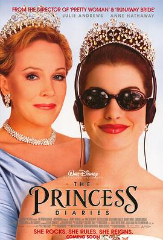

公主日记 / The Princess Diaries
又名：走佬俏公主(港) / 麻雀变公主(台)
作品信息
| 导演 | 盖瑞·马歇尔 |
| 编剧 | 梅格·卡伯特 / 吉娜·温德科斯 |
| 主演 | 朱莉·安德鲁斯 / 安妮·海瑟薇 / 埃克托尔·埃利松多 / 希瑟·玛塔拉佐 / 曼迪·摩尔 / 卡罗琳·古多尔 / 罗伯特·舒瓦兹曼 / 伊瑞克·冯·迪滕 / 帕特里克·约翰·弗吕格 / 肖恩·奥布赖恩 / 吴珊卓 / 凯瑟琳·马歇尔 / 明迪·布尔瓦诺 / 金姆利·史密斯 / 伊丽莎白·古登拉特 / Tamara Levinson / 莱诺尔·托马斯·道格拉斯 / Cassie Rowell / 托德·劳 / 乔尔·麦克拉里 / 克莱尔·塞拉 / 邦妮·阿伦斯 / 朱莉·帕丽斯 / 简·莫里斯 / 罗伯特·格劳蒂尼 / Gwenda Perez / 芭芭拉·马歇尔 / 山姆·丹诺夫 / 特雷西·雷纳 / Stanley Frazen / Willie Brown / 帕特里克·里奇伍德 / 卡尔·马金恩 / 凯西·贾维尔 / 伊桑·桑德勒 / Bud Markowitz / Mark Thompson / Brian Phelps / 桑德拉·泰勒 / 汤姆·海因斯 / 尼科洛·汤姆 / Lori Sigrist |
| 类型 | 喜剧 / 爱情 / 家庭 |
| 制片国家/地区 | 美国 / 英国 |
| 语言 | 英语 / 荷兰语 / 意大利语 |
| 上映日期 | 2001-08-03(美国) |
| 片长 | 115分钟 |
| IMDb | tt0247638 |
最后一次看到是 2026-08-12T21:13:15+08:00 · 豆瓣原页